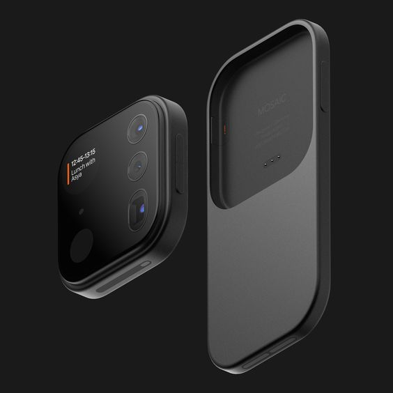

Smartphone Cameras
Smartphone cameras have revolutionized photography by making it accessible to everyone. With their advanced technology and convenience, they have become the most popular type of camera for capturing everyday moments.
Features of Smartphone Cameras
Some key features of smartphone cameras include:
- High-resolution sensors for detailed images
- Multiple lenses for wide-angle, telephoto, and macro shots
- Advanced computational photography features
- Compact and always available
- Integration with social media and cloud services
Popular Smartphone Camera Brands and Models
Some popular brands and models in the smartphone camera market include:
- Apple iPhone series (e.g., iPhone 13 Pro, iPhone 12 Pro Max)
- Samsung Galaxy series (e.g., Samsung Galaxy S21 Ultra, Samsung Galaxy Note 20)
- Google Pixel series (e.g., Google Pixel 6 Pro, Google Pixel 5)
- Huawei P series (e.g., Huawei P40 Pro, Huawei Mate 40 Pro)
Smartphone cameras continue to innovate with new features and capabilities, making high-quality photography more accessible and convenient than ever before.